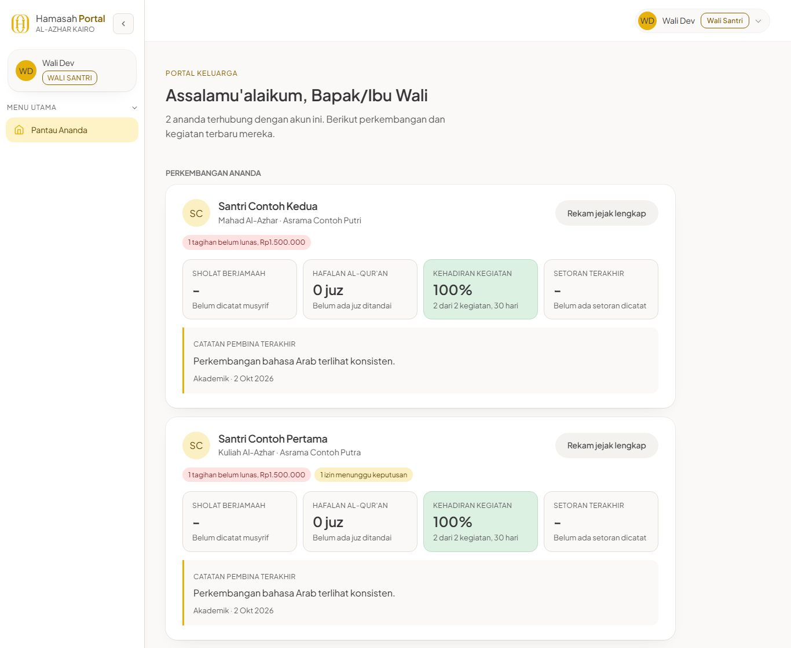

Ust. H. Ifdoni Nur Syamsi
Founder Hamasah International
- Menyetujui arah, prioritas, dan biaya sistem
- Menetapkan periode penerimaan setiap tahun
- Memberi persetujuan akhir sebelum sistem dibuka untuk wali dan santri
Dari pendaftaran, berkas, kloter, dan visa, sampai presensi, hafalan, tagihan, dan kabar untuk wali. Halaman ini menjelaskan apa yang sudah berjalan, cara memakainya untuk tiap peran, hasil audit hari ini, dan keputusan yang dibutuhkan dari pimpinan.
Contoh tampilan dengan data fiktif.
Semua keputusan di halaman ini, mulai dari biaya AI, data kesehatan, aturan akun, sampai izin membuka sistem untuk wali, disetujui oleh dua pimpinan berikut. Tim teknis menyiapkan bahan dan menjalankan keputusan itu.
Founder Hamasah International

Direktur Hamasah International Regional Mesir
Calon santri, wali, musyrif, guru, petugas, keuangan, dan pengurus bekerja di dua negara dengan jam yang berbeda. Sistem ini membuat mereka melihat data yang sama, sesuai hak masing-masing, tanpa harus saling menanyakan lewat chat.
Tahap pendaftaran, berkas yang kurang, kloter, dan visa bisa dicek kapan saja tanpa menunggu balasan admin.
Presensi sholat, setoran hafalan, izin, kesehatan, materi, dan nilai tersimpan di satu tempat.
Invoice dan kuitansi bernomor otomatis. Koreksi dan pembatalan wajib beralasan dan tercatat.
Satu layar menunjukkan visa yang hampir habis, tagihan lama, pendaftar yang belum disentuh, dan asrama yang belum dicatat.
Pilih satu peran. Mockup bisa diklik: ubah presensi, setujui izin, tandai tagihan lunas, atau beri nilai tugas. Semua nama dan angka di mockup adalah data fiktif.
Pilih peran. Di kiri terlihat menu yang benar-benar tampil di sidebar akun itu. Di kanan ada halaman dan tab yang bisa dibuka, langkah kerja yang bisa diputar, dan hal yang sengaja tidak bisa dibuka.
Tangkapan layar asli dengan akun contoh, diambil pertengahan Oktober 2026. Tata letak beberapa halaman sudah dirapikan sejak itu, misalnya kartu pendaftar, visa, inventaris, dan riwayat keuangan.




Urutan ini nyata: tiap tahap memakai bagian sistem yang berbeda, dan setiap perubahan mencatat siapa yang mengubah dan kapan.
Formulir, persetujuan data, kode akses pendaftar.
Petugas menilai dokumen dan mengatur tindak lanjut.
Jadwal berangkat dan pelacak visa pelajar.
Kamar, jadwal, piket, dan uang kas.
Maddah, kuis, tugas, presensi, hafalan.
Dashboard, rapor PDF, tagihan, kuitansi.
Study Partner AI hanya boleh menjawab dari materi yang dimasukkan guru, dan kembali ke jawaban lokal bila kuota habis atau layanan gagal. Penyedia AI berbayar belum diaktifkan; itu keputusan pimpinan di bawah.
Wali dan santri hanya membuka santri yang terhubung dengan akunnya. Musyrif hanya asramanya. Guru hanya maddah miliknya.
Kata sandi disimpan sebagai hash. Memblokir akun atau mengganti email mencabut sesi lama. Undangan hanya sekali pakai.
Dokumen disimpan di penyimpanan privat. Data kesehatan mati secara bawaan sampai kebijakan privasi memuatnya.
Situs memakai HTTPS wajib, kebijakan konten yang ketat, dan menolak disematkan di situs lain.
Koreksi tagihan, pembatalan, unduhan kuitansi, dan perubahan status tercatat di Jejak Audit yang hanya bisa dibuka admin.
Pesan ke wali disiapkan sistem, lalu dikirim petugas setelah memeriksa isinya. Tidak ada pesan otomatis yang terkirim diam-diam.
Semua angka dihitung hari ini: seluruh tes otomatis dijalankan, pemeriksaan kontras diulang, halaman situs live dicek satu per satu, dan tiap temuan audit 23 Oktober ditelusuri ulang di kode.
tes otomatis lulus. Dua sisanya gagal karena satu paket belum terpasang di komputer pengujian, bukan karena kode.
risiko akses dari audit 23 Oktober sudah tertutup di kode.
pelanggaran kontras warna, turun setelah perbaikan hari ini.
halaman situs live membalas normal; berkas internal tidak bisa diunduh.
Cara membacanya. “Tertutup di kode” berarti penyebabnya sudah hilang dari kode dan dicakup tes otomatis. Itu belum sama dengan terbukti aman lewat uji keamanan di lingkungan terpisah, yang masih dijadwalkan.
Disarikan dari catatan keputusan pengurus 24 September 2026 dan audit hari ini. Status terbaru tiap butir dikonfirmasi saat presentasi.
Ada biaya per pertanyaan, dan kebijakan privasi harus menyebut pertanyaan santri diproses penyedia AI di luar negeri. Tanpa ini, Study Partner tetap memakai jawaban lokal dari materi guru.
Prinsipnya sudah disetujui. Dinyalakan bersamaan dengan kebijakan privasi yang memuat data kesehatan. Wali hanya melihat kondisi dan catatan untuk wali.
Sudah dijawab “dihapus setelah jangka waktu tertentu”. Lamanya belum ditetapkan, misalnya 12 bulan sejak pendaftaran terakhir diubah.
Apakah kata sandi dari admin kedaluwarsa dalam beberapa hari, dan wajib diganti saat masuk pertama?
Persetujuan akhir ada pada Ust. H. Ifdoni Nur Syamsi dan Ust. Aji Nugeroho, Lc. Penguji untuk tujuh peran perlu ditunjuk dari tim.
Pengingat kini dikirim manual dari konsol. Notifikasi otomatis butuh akses domain, catatan DNS, dan pengirim email atau WhatsApp resmi.
Mari mulai dari minggu pertama: pastikan server produksi sesuai kode, lalu uji tiap peran bersama orang yang akan memakainya, dengan persetujuan akhir dari Ust. Ifdoni dan Ust. Aji.
Kembali ke atas